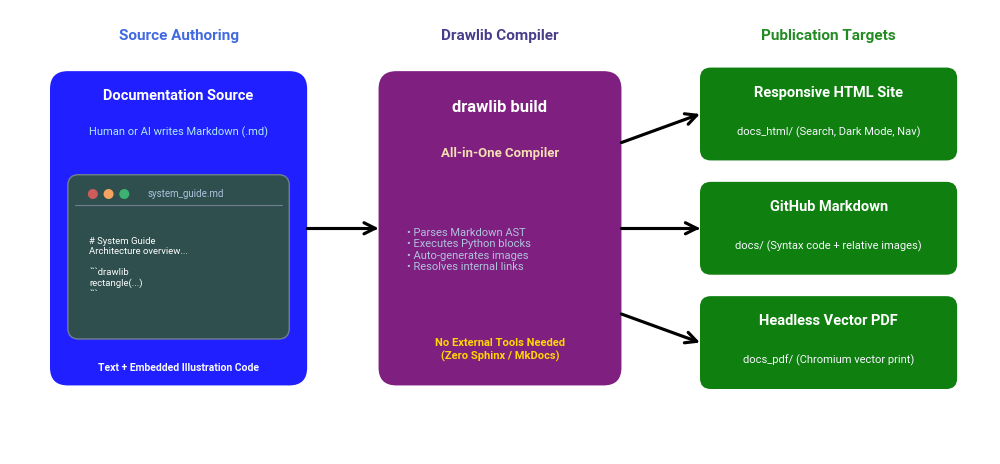
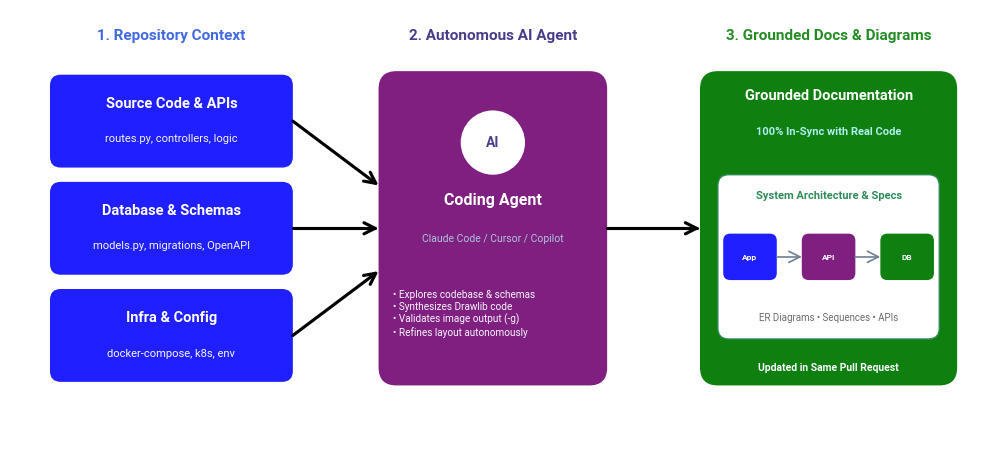

Welcome to the Drawlib Documentation!
Drawlib is a pure-Python drawing library and documentation compiler crafted to facilitate "Illustration as Code" and "Documentation as Code".

Source Code
from drawlib.canvas import config
from drawlib.colors import Colors, Colors140
from drawlib.shapes import circle, rectangle
from drawlib.text import text
from drawlib.types import Style
config(width=100, height=40)
circle(xy=(25, 20), radius=12, style=Style(fill_color=Colors140.Turquoise, line_color=Colors.Navy, line_width=2))
text(xy=(25, 20), text="Circle", style=Style(text_color=Colors.White, text_size=16))
rectangle(xy=(75, 20), width=24, height=24, style=Style(fill_color=Colors140.Coral, line_color=Colors.Navy, line_width=2))
text(xy=(75, 20), text="Rectangle", style=Style(text_color=Colors.White, text_size=16))
Key Capabilities
1. Build Entire Documentation End-to-End
Drawlib is more than an illustration library—it is an integrated documentation compiler.
You can author full technical documentation in standard Markdown containing embedded drawlib code blocks. Without configuring external documentation generators (such as Sphinx, MkDocs, or Docusaurus), a single command (drawlib build) compiles everything into publication-ready outputs:
- Responsive Static HTML (
docs_html/): Full-featured documentation site with instant search, dark/light themes, and navigation sidebar. - GitHub-Optimized Markdown (
docs/): Clean Markdown with syntax-highlighted code blocks followed by relative diagram images for browsing on GitHub. - Headless Vector PDF (
docs_pdf/): High-fidelity, print-ready PDF generated via headless Chromium.
Because the entire documentation workflow is unified in Python and Markdown, human developers and AI coding agents can build, generate, and maintain complete documentation sites end-to-end.

Source Code
from drawlib.canvas import config
from drawlib.colors import Colors, Colors140
from drawlib.fonts import FontRoboto
from drawlib.lines import line
from drawlib.shapes import circle, rectangle
from drawlib.text import text
from drawlib.types import Style
config(width=140, height=65)
# Styles
s_src = "blue_flat"
s_engine = "purple_flat"
s_out = "green_flat"
ts_title = Style(text_size=10.5, text_font=FontRoboto.ROBOTO_BOLD, text_color=Colors.White)
ts_desc = Style(text_size=8, text_font=FontRoboto.ROBOTO_REGULAR, text_color=Colors140.GhostWhite)
ts_engine_title = Style(text_size=12, text_font=FontRoboto.ROBOTO_BOLD, text_color=Colors.White)
ts_engine_desc = Style(text_size=8, text_font=FontRoboto.ROBOTO_REGULAR, text_color=Colors140.LightSteelBlue)
# Section Headers
text((25, 60), "Source Authoring", style=Style(text_size=11, text_font=FontRoboto.ROBOTO_BOLD, text_color=Colors140.RoyalBlue))
text((70, 60), "Drawlib Compiler", style=Style(text_size=11, text_font=FontRoboto.ROBOTO_BOLD, text_color=Colors140.DarkSlateBlue))
text((116, 60), "Publication Targets", style=Style(text_size=11, text_font=FontRoboto.ROBOTO_BOLD, text_color=Colors140.ForestGreen))
# 1. Source (Left)
rectangle((25, 33), width=36, height=44, style=s_src, r=2.5)
text((25, 51.5), "Documentation Source", style=ts_title)
text((25, 46.5), "Human or AI writes Markdown (.md)", style=Style(text_size=8, text_font=FontRoboto.ROBOTO_REGULAR, text_color=Colors140.PaleTurquoise))
# Mini editor window inside Source box
rectangle((25, 29), width=31, height=23, style=Style(fill_color=Colors140.DarkSlateGray, line_color=Colors140.SlateGray, line_width=1), r=1.5)
# Window dots
circle((13, 37.8), radius=0.7, style=Style(fill_color=Colors140.IndianRed, line_color=Colors.Transparent))
circle((15.2, 37.8), radius=0.7, style=Style(fill_color=Colors140.SandyBrown, line_color=Colors.Transparent))
circle((17.4, 37.8), radius=0.7, style=Style(fill_color=Colors140.MediumSeaGreen, line_color=Colors.Transparent))
text((26, 37.8), "system_guide.md", style=Style(text_size=7, text_font=FontRoboto.ROBOTO_REGULAR, text_color=Colors140.LightSteelBlue))
line((10.5, 36.2), (39.5, 36.2), style=Style(line_color=Colors140.SlateGray, line_width=0.8))
# Editor text
text((12.5, 27.5), "# System Guide\nArchitecture overview...\n\n```drawlib\nrectangle(...)\n```", style=Style(text_size=6.8, text_font=FontRoboto.ROBOTO_REGULAR, text_color=Colors.White, text_halign="left"))
text((25, 13.5), "Text + Embedded Illustration Code", style=Style(text_size=7.5, text_font=FontRoboto.ROBOTO_BOLD, text_color=Colors140.GhostWhite))
# 2. Engine (Center)
rectangle((70, 33), width=34, height=44, style=s_engine, r=2.5)
text((70, 50), "drawlib build", style=ts_engine_title)
text((70, 43.5), "All-in-One Compiler", style=Style(text_size=9.5, text_font=FontRoboto.ROBOTO_BOLD, text_color=Colors140.Wheat))
text((57, 30), "• Parses Markdown AST\n• Executes Python blocks\n• Auto-generates images\n• Resolves internal links", style=Style(text_size=8, text_font=FontRoboto.ROBOTO_REGULAR, text_color=Colors140.LightSteelBlue, text_halign="left"))
text((70, 16), "No External Tools Needed\n(Zero Sphinx / MkDocs)", style=Style(text_size=8, text_font=FontRoboto.ROBOTO_BOLD, text_color=Colors140.Gold))
# Arrow Left -> Center
line((43, 33), (53, 33), arrowhead="->", style="bold")
# 3. Targets (Right)
rectangle((116, 49), width=36, height=13, style=s_out, r=1.5)
text((116, 52), "Responsive HTML Site", style=ts_title)
text((116, 46.5), "docs_html/ (Search, Dark Mode, Nav)", style=ts_desc)
rectangle((116, 33), width=36, height=13, style=s_out, r=1.5)
text((116, 36), "GitHub Markdown", style=ts_title)
text((116, 30.5), "docs/ (Syntax code + relative images)", style=ts_desc)
rectangle((116, 17), width=36, height=13, style=s_out, r=1.5)
text((116, 20), "Headless Vector PDF", style=ts_title)
text((116, 14.5), "docs_pdf/ (Chromium vector print)", style=ts_desc)
# Arrows Center -> Right targets
line((87, 45), (98, 49), arrowhead="->", style="bold")
line((87, 33), (98, 33), arrowhead="->", style="bold")
line((87, 21), (98, 17), arrowhead="->", style="bold")
2. AI Agents Generate Grounded Docs & Diagrams from Codebase
Because Drawlib diagrams are written in clean, standard Python code, modern AI coding agents (such as Claude Code, Cursor, GitHub Copilot, and ChatGPT) can generate, inspect, and maintain technical illustrations naturally.
By placing Drawlib directly in your application or documentation repository:
- AI Inspects Real Context: Agents inspect actual database schemas (
models.py), API endpoints, services, and configuration files before drawing a single box. - Grounded, High-Fidelity Diagrams: The AI generates architecture diagrams, sequence diagrams, ER diagrams, and workflow charts that accurately reflect real code rather than imaginary mockups.
- Single Pull Request Synchrony: When you modify application logic, the AI agent updates the implementation code, Markdown documentation, and embedded Drawlib diagrams simultaneously in the same Pull Request.

Source Code
from drawlib.canvas import config
from drawlib.colors import Colors, Colors140
from drawlib.fonts import FontRoboto
from drawlib.lines import line
from drawlib.shapes import circle, rectangle
from drawlib.text import text
from drawlib.types import Style
config(width=140, height=65)
# Styles
s_repo = "blue_flat"
s_agent = "purple_flat"
s_doc = "green_flat"
ts_title = Style(text_size=10.5, text_font=FontRoboto.ROBOTO_BOLD, text_color=Colors.White)
ts_desc = Style(text_size=8, text_font=FontRoboto.ROBOTO_REGULAR, text_color=Colors140.GhostWhite)
# Column Headers
text((24, 60), "1. Repository Context", style=Style(text_size=11, text_font=FontRoboto.ROBOTO_BOLD, text_color=Colors140.RoyalBlue))
text((69, 60), "2. Autonomous AI Agent", style=Style(text_size=11, text_font=FontRoboto.ROBOTO_BOLD, text_color=Colors140.DarkSlateBlue))
text((116, 60), "3. Grounded Docs & Diagrams", style=Style(text_size=11, text_font=FontRoboto.ROBOTO_BOLD, text_color=Colors140.ForestGreen))
# 1. Left: Repository Context items
rectangle((24, 48), width=34, height=13, style=s_repo, r=1.5)
text((24, 50.5), "Source Code & APIs", style=ts_title)
text((24, 45.5), "routes.py, controllers, logic", style=ts_desc)
rectangle((24, 33), width=34, height=13, style=s_repo, r=1.5)
text((24, 35.5), "Database & Schemas", style=ts_title)
text((24, 30.5), "models.py, migrations, OpenAPI", style=ts_desc)
rectangle((24, 18), width=34, height=13, style=s_repo, r=1.5)
text((24, 20.5), "Infra & Config", style=ts_title)
text((24, 15.5), "docker-compose, k8s, env", style=ts_desc)
# Arrows from Repo to Agent
line((41, 48), (53, 39), arrowhead="->", style="bold")
line((41, 33), (53, 33), arrowhead="->", style="bold")
line((41, 18), (53, 27), arrowhead="->", style="bold")
# 2. Center: AI Agent
rectangle((69, 33), width=32, height=44, style=s_agent, r=2.5)
circle((69, 45), radius=4.5, style=Style(fill_color=Colors.White, line_color=Colors.Transparent))
text((69, 45), "AI", style=Style(text_size=10, text_font=FontRoboto.ROBOTO_BOLD, text_color=Colors140.DarkSlateBlue))
text((69, 37), "Coding Agent", style=Style(text_size=11.5, text_font=FontRoboto.ROBOTO_BOLD, text_color=Colors.White))
text((69, 31.5), "Claude Code / Cursor / Copilot", style=Style(text_size=7.5, text_font=FontRoboto.ROBOTO_REGULAR, text_color=Colors140.LightSteelBlue))
text((55, 21), "• Explores codebase & schemas\n• Synthesizes Drawlib code\n• Validates image output (-g)\n• Refines layout autonomously", style=Style(text_size=7.2, text_font=FontRoboto.ROBOTO_REGULAR, text_color=Colors140.GhostWhite, text_halign="left"))
# Arrow Agent to Output
line((85, 33), (98, 33), arrowhead="->", style="bold")
# 3. Right: Delivered Docs & Diagrams
rectangle((116, 33), width=36, height=44, style=s_doc, r=2.5)
text((116, 51.5), "Grounded Documentation", style=ts_title)
text((116, 46.5), "100% In-Sync with Real Code", style=Style(text_size=8, text_font=FontRoboto.ROBOTO_BOLD, text_color=Colors140.PaleTurquoise))
# Mini visual card inside doc box
rectangle((116, 29), width=31, height=23, style=Style(fill_color=Colors.White, line_color=Colors140.SeaGreen, line_width=1), r=1.5)
text((116, 37.5), "System Architecture & Specs", style=Style(text_size=8, text_font=FontRoboto.ROBOTO_BOLD, text_color=Colors140.SeaGreen))
# 3 Mini mockup nodes inside card: App -> API -> DB
rectangle((105, 29), width=7.5, height=6.5, style="blue_flat", r=1)
text((105, 29), "App", style=Style(text_size=6, text_font=FontRoboto.ROBOTO_BOLD, text_color=Colors.White))
line((108.75, 29), (112.25, 29), arrowhead="->", style=Style(line_width=1.2, line_color=Colors140.SlateGray))
rectangle((116, 29), width=7.5, height=6.5, style="purple_flat", r=1)
text((116, 29), "API", style=Style(text_size=6, text_font=FontRoboto.ROBOTO_BOLD, text_color=Colors.White))
line((119.75, 29), (123.25, 29), arrowhead="->", style=Style(line_width=1.2, line_color=Colors140.SlateGray))
rectangle((127, 29), width=7.5, height=6.5, style="green_flat", r=1)
text((127, 29), "DB", style=Style(text_size=6, text_font=FontRoboto.ROBOTO_BOLD, text_color=Colors.White))
text((116, 20.5), "ER Diagrams • Sequences • APIs", style=Style(text_size=7, text_font=FontRoboto.ROBOTO_REGULAR, text_color=Colors140.DimGray))
text((116, 13.5), "Updated in Same Pull Request", style=Style(text_size=7.5, text_font=FontRoboto.ROBOTO_BOLD, text_color=Colors140.GhostWhite))
Getting Started
- About Drawlib: Philosophy, motivation, and "Illustration as Code".
- Installation Guide: Installation instructions for Python 3.11+.
- Quick Start Guide: Create your first illustration in 2 minutes.
Documentation Sections
Explore the comprehensive guides organized in the sidebar:
- Introductions: Getting started, philosophy, links, and release notes.
- Document Builder: Built-in compiler for responsive HTML sites, GitHub Markdown, and Chromium PDF.
- CLI Reference: Command line interface (
build,serve,init,show,export,cache). - Foundations: Canvas, Cartesian coordinates, 21 shapes, lines, text, icons, and images.
- Styles & Theming: Color systems, typography fonts, official themes (
default,essentials,monochrome), and custom presets. - SmartArts Diagrams: High-level cards, tables, trees, mind maps, chevrons, and code blocks.
- Technical Diagrams: Architecture, sequence, flow, UML class, ER, and state diagrams.
- Charts: Pure-Python vector charts (Bar, Line, Area, Pie, Radar, Scatter, Gantt).
- Advanced Topics: AI coding agents, geometry math, dynamic rendering (
get_dimage_from_code), and debugging.
© 2026 drawlib by Yuichi Ito. Released under the Apache 2.0 License.